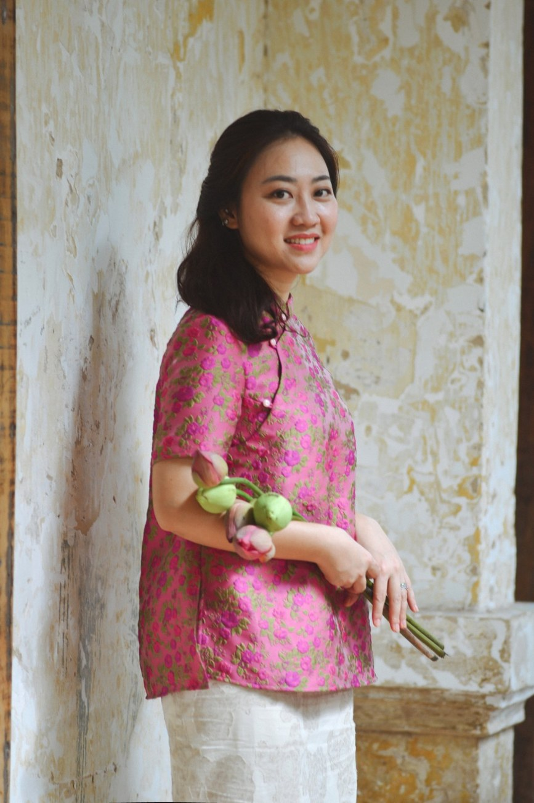

Không gian học tập hiện đại, sáng sủa và truyền cảm hứng.
Thành tích nổi bật
Kết quả học viên ULS
100%
Học sinh đội tuyển đạt giải cấp Thành phố
2024–2025: 01 Giải Nhất, 05 Giải Nhì, 09 Giải Ba. 2025–2026: 02 Giải Nhì.
Chuyên Anh
Lê Hồng Phong • Trần Đại Nghĩa • PTNK
Nhiều học sinh trúng tuyển các trường chuyên, năng khiếu hàng đầu TP.HCM.
IELTS
IELTS 8.0 và nhiều kết quả 7.5+
Lộ trình từ nền tảng đến nâng cao, bám sát mục tiêu học viên.
10 điểm
Tiếng Anh tuyển sinh lớp 10
Nhiều học sinh đạt điểm tuyệt đối môn Tiếng Anh.
Môi trường học tập
Không gian học tập tại ULS
Phòng học sáng, sạch, có máy lạnh, màn hình trình chiếu và không gian học tập tập trung. Hình ảnh có thể click để xem rõ hơn.
Chương trình học
Khóa học tại ULS English
📚
Tiếng Anh THCS
Bám sát chương trình chính khóa, củng cố nền tảng và chuẩn bị cho kiểm tra, tuyển sinh.
Lớp
Thời gian
Lớp 6
Thứ Hai 16h30–19h30
Lớp 7
Thứ Tư 16h30–19h30
Lớp 8 Cơ bản
Thứ Ba 16h30–19h30
Lớp 8 Nâng cao
Thứ Bảy 16h30–19h30
Lớp 9 Cơ bản 1
Thứ Năm 16h30–19h30
Lớp 9 Cơ bản 2
Chủ nhật 13h00–16h00
9CB3 (nhóm nhỏ <15 HS)
Thứ Sáu 16h30–19h30
Lớp 9 Nâng cao
Thứ Bảy 13h00–16h00 & Chủ nhật 16h30–19h30
9CB3 (nhóm nhỏ <15 HS): Thứ Sáu 16h30–19h30, phù hợp học sinh cần được kèm sát và củng cố nền tảng.
🏆
Chuyên Anh & Học sinh giỏi
Dành cho học sinh có định hướng thi Chuyên Anh, PTNK và HSG.
Từ vựng học thuật
Word Formation
Sentence Transformation
Idiomatic Expressions
Reading chuyên sâu
Luyện đề nâng cao
🌍
IELTS Launchpad (5.5+)
Thứ Bảy – Chủ nhật | 08h00–11h00
Xây dựng nền tảng học thuật và phát triển 4 kỹ năng IELTS.
Giáo trình
Cambridge IELTS
Mindset for IELTS
IELTS Trainer
Tài liệu biên soạn riêng
🚀
IELTS Mastery (6.5+)
Thứ Ba – Thứ Năm | 13h00–16h00
Nâng cao kỹ năng Writing, Speaking và chiến lược làm bài thực chiến.
Giáo trình
Cambridge IELTS
Official IELTS Practice Materials
IELTS Advantage
Tài liệu chuyên sâu biên soạn riêng
Minh chứng thực tế
Hình ảnh kết quả & tin nhắn
Mỗi nhóm chỉ hiển thị một số hình ảnh tiêu biểu để trang gọn và tinh tế. Phụ huynh có thể bấm “Xem thêm” hoặc click vào ảnh để xem rõ hơn.
IELTS
IELTS 8.0, 7.5+ và phản hồi học viên
Chuyên Anh • PTNK • Tuyển sinh 10
Điểm thi, trúng tuyển và tin vui từ học sinh
Tin nhắn phụ huynh & học sinh
Những chia sẻ sau quá trình học và luyện thi
Giáo viên phụ trách
Nguyễn Ái Minh Uyên
Thạc sĩ Ngôn ngữ Ứng dụng – Đại học Curtin (Úc)
Tổ trưởng Tổ Ngoại ngữ – Trường Trung học Thực hành Sài Gòn
IELTS 8.0 (Speaking 8.5)
Luyện thi Chuyên Anh
Bồi dưỡng Học sinh giỏi Thành phố
IELTS Academic
Tiếng Anh học thuật THCS
Kinh nghiệm giảng dạy và luyện thi nhiều năm, định hướng học sinh phát triển năng lực tiếng Anh học thuật, tư duy ngôn ngữ và kỹ năng làm bài hiệu quả.

Miss Uyên – ULS English
Đăng ký tư vấn
Sẵn sàng bắt đầu cùng ULS?
Phụ huynh vui lòng điền form đăng ký hoặc liên hệ Zalo để được tư vấn lớp phù hợp.